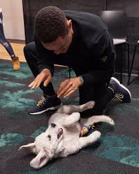

Trevor explains how he grew up in a black neighborhood in a black country. He explains how he had travelled to many black cities in black countries all over the continent but has never found a place where black people like cats. He gives an incident during an Orlando Pirates Soccer where a cat had entered into a stadium in a crowd but when the security guard saw it all that he decided to do was to kill it. The whites could not persevere with the guard and they decided to have him caught up and sent to jail. The guard who was a black person decided to defend himself saying that a cat was a sign of witchcraft but no one was on his side. This incident sounds like a joke because every group defended itself.
 After a while Trevors family moves to Eden Park where his mother brings him two black cats from her working colleagues who had tried to discard the earlier. He sees this as his best moment in his life for owning the privilege to have cats in his home He explains how someone wouldnt dare owning in a black neighbourhood. This illustrates a theme of lack of self-privacy in the community where one can own everything without anyones interference. One day Trevor’s family returns home and find their cats bleeding and their heads chopped off. This sounds like lack of sympathy and minding ones affairs in the community. Their neighbors seem to be people who don’t mind about one’s nature andsomeonhes nature. They do not consider Trevor’s nature of liking cats. After a while Trevors family owns a dogs. He explains how south Africans had dogs and the state where everyone had a dog even for the poorest person in their community. This test brings out the theme of insecurity in their community for they have to keep dogs which act like a security to the community.A lady comes in Trevor’s home and offers them a gift of two dogs which they name Panther and Fufi. Panther is described as a dog who had a pink nose so he was named pink panther. Trevor also describes the dogs as two sisters who loved and hated each other. This is because they would look at each other, but they would also fight each other at sometimes. Fufi is described as a dog who is beautiful, clean lines, happy face and she looks a perfect bull terroir and scuffy –looking. Trevors family has not discovered that fufi is deaf and wonders why he is always left behind and panther goes for instead. After sometime Trevor notices that fufi runs away when they are out and this comes out as a strange action to Trevor. He does not believe that such a well behaved dog can behave in such a weird manner. One day Trevor s family comes at home from their daily activities and finds out that fufi is missing. This is a horrible moment for Trevor and he thinks that he has already lost everything in his life.
Truly this seems to be a bad feeling like a normal person would feel when one has lost something that you treasure in your life. Trevor goes with his mum up to their neighborhood and they finally see their dog although the woman hesitates to give the dog back. This shows that in that community people have an attitude of partaking things that they dont own. The woman defends herself by saying that she had bought the dog by herself. This appears to be the most exciting part for both teams have the same reasoning of why they should own the dog. Trevor wonders why his dog has become another woman’s affair for it is a treasure of his life which he has never owned before. He cries out for his dog but the woman still resists and asks for money in order to give back the dog. Trevor wonders what kind of a dog fufi is for he does not come to him yet they spend most of their time together. Patricia finally decides to give out money in return of fufi. Trevor is now happy but one thing that upsets him is that fufi now has a new boyfriend. He really brings out the thought to himself. They later go home with fufi and goes on with life. Afterwards Fufi dies after an attack in their home where a wall falls on him.